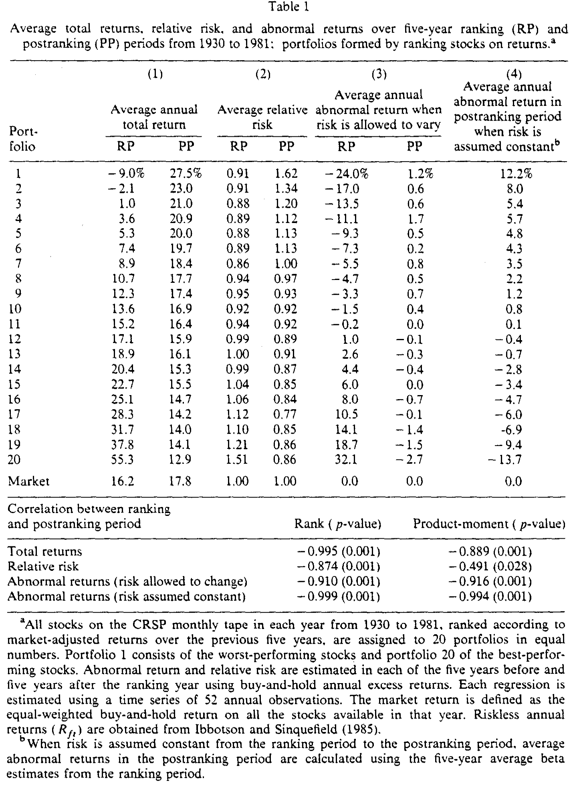
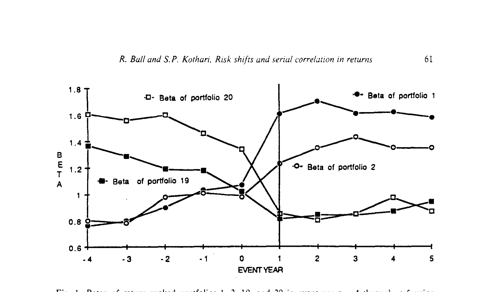
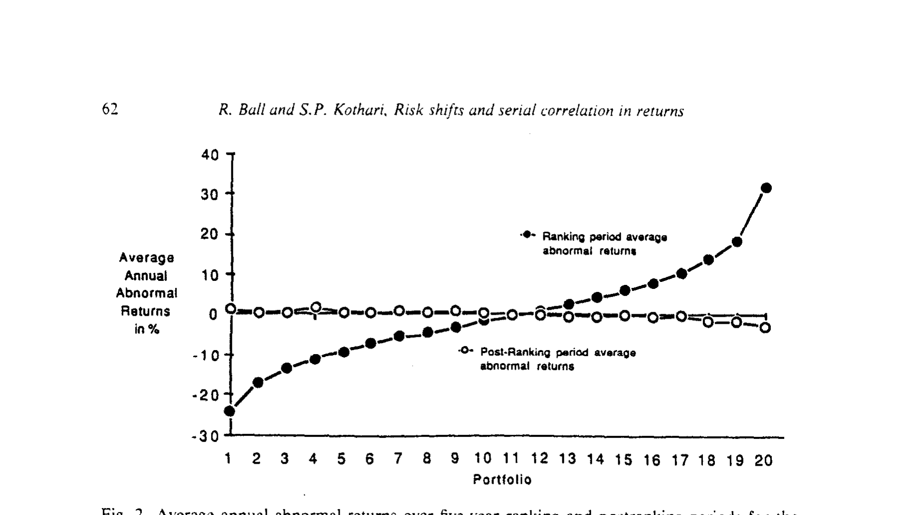
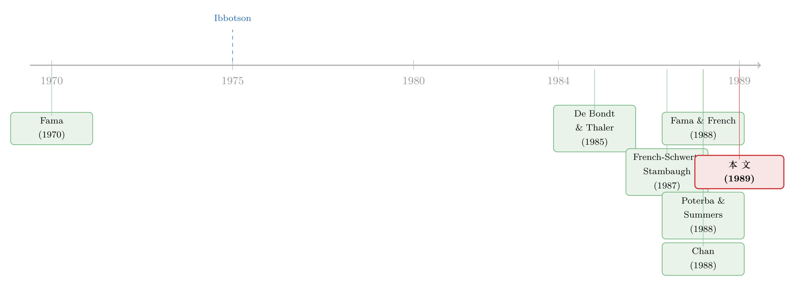

「输家翻身」之谜：真相不是市场犯傻，而是 beta 偷偷换了脸
本文读的是 Ball & Kothari (1989, Journal of Financial Economics)：过去五年的「输家」组合，未来五年确实会跑赢「赢家」——五年期相对收益里有强烈的负序列相关。但作者用事件时间的 beta 估计证明，这种负相关几乎全部来自相对风险（beta）的系统性漂移：极端组合的 beta 在五年里变动 40–80%。一旦让风险随时间变化，97.4% 的「异常收益」就消失了。换句话说，这不是市场过度反应，而是预期收益在随风险一起变。
1 一个让人不安的事实
先从一个让人不安的事实说起。
如果你在 1980 年代中期翻开金融学的顶刊，会读到一连串彼此呼应、却又彼此矛盾的发现。一边是 De Bondt 和 Thaler（1985）的「过度反应」(overreaction)：把股票按过去几年的收益排序，买入「输家」、卖空「赢家」，未来几年居然能赚到可观的超额收益——市场似乎对坏消息反应过头，又在事后慢慢纠正。另一边是 Fama 和 French（1988）、Poterba 和 Summers（1988）几乎同时给出的「均值回归」(mean reversion) 证据：在三到五年的长区间上，市场组合的收益存在显著的负序列相关(negative serial correlation)，过去涨得多，将来就涨得少。
两组证据指向同一个方向：长期收益是「可预测」的，而可预测，似乎就意味着市场没那么有效。
于是一个自然的问题摆在了面前——这种长期负相关，到底是市场犯了傻，还是我们量错了风险？
这正是 Ball 和 Kothari 这篇 1989 年的论文要回答的问题。他们的答案干净利落，却也足够「扫兴」：负相关是真的，但它几乎不是定价错误，而是风险本身在动。一只刚刚暴跌的股票，它的 beta 已经不是暴跌之前那只股票的 beta 了。
2 两个看上去一样、骨子里相反的假说
要把这件事讲清楚，得先把两个互相竞争的假说摆到桌面上。它们对数据的「外观」预测几乎一致，却对市场有效性给出截然相反的结论。
假说一：市场错误定价 (mispricing)。 价格会偏离基本价值，做长时间、但终将被纠正的偏离，或者像 Shiller（1984）、Summers（1986）、De Bondt 和 Thaler（1985, 1987）说的那样，对信息系统性地反应过度。涨过头的终会跌回来，跌过头的终会涨回来——于是长期收益负相关。
假说二：有效市场里预期收益在变 (changing expected returns)。 这条线可以追到 Fama（1976）、一直到 French、Schwert 和 Stambaugh（1987）与 Fama 和 French（1988）。它的逻辑很微妙：假定预期股利不变，如果某只股票的相对风险上升了，投资者就会要求更高的预期相对收益；而要在股利不变的前提下提供更高的预期收益，今天的价格必须先跌。于是我们观察到的是：一次（因风险上升而起的）价格下跌，紧跟着一段更高的预期收益。这同样会产生负序列相关——但市场始终是有效的。
接着，一个关键的洞察是：这套「预期收益随风险而变」的故事，不必停留在市场总体层面。把它搬到个股的相对风险（即 beta）上，逻辑完全对称：当一家公司的相对风险上升，其他条件不变，价格下跌、预期相对收益上升，于是市场调整后收益(market-adjusted return) 出现负相关。
这里还藏着一条常被忽略的暗线——杠杆(leverage)。股价下跌会抬高（市值口径的）杠杆，杠杆又会推高股权 beta（Galai 和 Masulis, 1976; Christie, 1982）。所以哪怕公司投资项目本身的预期收益恒定不变，仅仅因为杠杆，已实现的股权收益也会和随后的预期收益负相关。Ball、Lev 和 Watts（1976）早就指出，杠杆不会随股价瞬时调整。换句话说：即使在完全有效的市场里，股权收益也不该服从随机游走，它天生就该是负序列相关的。
问题是，到此为止，两个假说在数据外观上还是难分伯仲。谁也没有给出一个能在经验上把它们区分开的检验。这正是本文要补上的那一步。
3 识别策略：让 beta 自己在「事件时间」里走一遍
本文不是理论论文，但它的识别全靠一个回归设定。把这一节读懂，后面的所有数字就都有了归宿。
真正关键的一步在于：怎样控制随时间变化的预期收益，从而把「错误定价」和「风险变化」分开？
作者的办法，是把 Fama、Fisher、Jensen 和 Roll（1969）的「事件时间异常收益」思想，延伸到 CAPM 的第二个参数——beta——上去，并借用 Ibbotson（1975）估计新股价格表现的技术。
具体做法是这样的。每个日历年初，把 CRSP 上所有股票按过去五年的已实现收益等分成 20 个组合（组合 1 是最差的输家，组合 20 是最好的赢家）。排序那一年记为事件年 0，它前面五年（−4 到 0）是排序期(ranking period)，后面五年（+1 到 +5）是排序后期(postranking period)。然后对每一个事件年 \(T=-4,\dots,+5\)、每一个组合 \(p\)，单独跑一条风险溢价形式的市场模型回归：
这里 \(t\) 是真实的日历年。每一个事件年 \(T\) 都用 52 个互不重叠的年度观测（排序年覆盖 1930–1981）来估计，于是同一个组合在十个事件年里得到十组 \((\alpha_p(T),\beta_p(T))\) 的估计。
这个设计有几个相当漂亮的性质，值得一一点出：
- 第一，对每个组合，52 个年度收益严格不重叠，是一条「乖巧」的时间序列，CAPM 参数可以干净地估出来；
- 第二，十个事件年里组合的成分股完全相同，所以「事件」对 beta 和 alpha 的影响是被隔离出来的；
- 第三，用整整 52 年的数据，去估计仅仅一年之内的参数漂移；
- 第四，也是最微妙的一点——年度组合在日历时间里逐年重构，所以平稳性假设不在个股层面，而在过程层面：作者假定的是「落入收益第一组的那一类股票，存在一个事后的 beta 过程」。既然本文的假说恰恰是「已实现收益与风险漂移之间存在某种可描述的关系」，那么把平稳性放在这个层面，正是恰当的。
逻辑链条至此闭合：如果负相关来自错误定价，那么哪怕正确地调整了风险，异常收益 \(\alpha_p(T)\) 也该呈现时间依赖；如果负相关来自风险变化，那么一旦让 beta 随事件年变动，剩下的异常收益就该是均值为零、彼此无关的。 CAPM 在此给出了一个精确而可证伪的预测。
一句题外话：作者特意用年度收益而非月度、日度，因为 Handa、Kothari 和 Wasley（1989）证明，beta 的离散度随测量区间拉长而增大，短区间的 beta 会因稀薄交易被「吸」向 1；而且用年度 beta 时，规模效应基本消失，结果不易被 size effect 污染。
4 主要结果：beta 偷偷换了脸
现在来看那张把一切讲清楚的表。

Table 1
先看总收益。按构造，排序期的总收益随组合序号单调上升：组合 1 年均 −9.0%，组合 20 年均 +55.3%——天壤之别。但到了排序后期，几乎完全反过来：组合 1 反弹到 +27.5%，组合 20 回落到 +12.9%。两期五年收益的 Spearman 秩相关是 −0.99，Pearson 积矩相关是 −0.89，都在 \(p<0.05\) 上可靠为负。注意，这是在控制了市场总收益之后得到的——也就是说，Fama 和 French（1988）在市场层面发现的负相关，剥掉聚合收益之后，在组合的相对收益里依然顽固地存在。
到这里，「输家翻身」的故事看上去铁证如山。然后，反转出现了。
看相对风险那两列。极端组合的 beta 发生了惊人的漂移：组合 1 的 beta 从 0.91 涨到 1.62，整整上升 78%；组合 20 的 beta 从 1.51 跌到 0.86，下降 57%。20 个组合里有 11 个的 beta 变动超过 0.20。两期 beta 的秩相关 −0.87（\(p<0.01\)）、积矩相关 −0.49（\(p<0.03\)）。别忘了，两个风险估计期之间的平均时间间隔只有五年。作者自己也写道，他们预计这个量级会让很多研究者吃惊。
图 1 把这件事画得更直白——组合 1、2 的 beta 一路向上，组合 19、20 的 beta 一路向下，而且漂移主要发生在排序期的五年里，到排序后期就基本稳住了，并没有继续游走。这一点很重要：它说明对排序后期 beta「非平稳」的担心是多余的。

Figure 1: Betas of return-ranked portfolios 1. 2. 19. and 20 in event ysars -4 through + 5 using
最后看异常收益，也就是用来区分两个假说的那把尺子。当允许风险变化时，排序后期的异常收益被压进了一个极窄的区间：最高不过组合 4 的 +1.7%，最低也就组合 20 的 −2.7%，绝对值上、相对于动辄两位数的总收益上，都小得可以忽略。
可作为对照，作者又做了一件「教科书里最常见」的事：假定 beta 恒定，用排序期（即历史）的 beta 去算排序后期的异常收益——这正是「拿事件前五年数据、假设 beta 不变」的标准事件研究做法。结果，异常收益一下子张开了：从组合 1 的 +12.2% 一路排到组合 20 的 −13.7%，又是一条漂亮的、单调的、可靠为负的相关。
两种算法，天壤之别。作者用一个数字给整件事盖棺定论：当允许相对风险变化时，异常收益的横截面样本方差，只有假定风险恒定时的 2.6%；也就是说，那条看上去铁证如山的「异常收益」里，97.4% 都能由相对风险的变化解释掉。
图 2 把两期的异常收益对组合序号画在一起，反差一目了然。

Figure 2: Average annual abnormal returns over five-year ranking and postranking periods for the
于是核心结论浮出水面：极端组合在五年里的相对风险变动高达 40–80%，一旦把它控制住，剩下的异常收益普遍小于每年 2%（对照之下，假定 beta 恒定时，极端组合的异常收益高达 12–14%）。这与市场有效性假说（Fama, 1970）在质上是一致的——过去的相对表现，对预测「大的、有经济意义的」异常收益几乎没有帮助。证据最支持的，是预期收益在变，而不是市场在错误定价。
5 顺手拆掉一座地标：反转策略再检验
文章的第 4 节，把这套逻辑直接对准了 De Bondt 和 Thaler（1985, 1987）那个最有名的「逆向投资」(contrarian) 策略——买输家、卖赢家。
问题很直接：在控制了「极端已实现收益会伴随巨大风险漂移」这件事之后，逆向策略还能不能赚到显著的异常收益？
作者沿用 Ibbotson 的技术，把 Chan（1988）的结论又往前推了一步：按逆向策略选出来的股票，它们的 beta 在仅仅一年之内，平均就会减半或翻倍。这是一个足以让人重新审视整个「过度反应」文献的量级——你以为自己在 1986 年买的是一只低风险的输家股票，可它的 beta 早已不是去年那只股票的 beta 了。（关于「输家翻身究竟是市场犯傻、还是我们量错了风险」这个同源问题的另一种处理，可参见《「输家会翻身」这件事，究竟是市场犯傻，还是我们量错了风险？》。）
6 文献脉络
把这篇论文放回它所在的那条河里，会看得更清楚。
源头是 Fama（1970）立下的有效市场范式，以及 Ibbotson（1975）为度量新股长期表现而发明的、把收益沿事件时间逐年估计的技术——后者给本文提供了趁手的「武器」。1980 年代中期，两股潮流同时涌来：一边是 De Bondt 和 Thaler（1985）用「过度反应」给反转策略提供了行为金融的解释；另一边是 French、Schwert 和 Stambaugh（1987）、Fama 和 French（1988）、Poterba 和 Summers（1988）从理性、时变预期收益的角度，记录并解释长期负相关。Chan（1988）则第一个把矛头指向「逆向策略里的 beta 在变」。

Ball 和 Kothari 这篇 1989 年的论文，站在这两股潮流的交汇处。它不满足于在市场层面争论，而是把战场搬到组合的相对风险上，给出了一个能在经验上区分「错误定价」与「时变预期收益」的、以 CAPM 为条件的判别检验——并把答案押在了后者。这条「用时变 beta 解释长期异象」的思路，此后在条件资产定价文献里开枝散叶（这一脉的延续，可参见《时变的 beta，被低估了二十年的风险》 与《会「看天」的 beta：当风险收编了价值与规模，动量却躲进了商业周期》）。
7 评论与延伸（Q&A + 研究方向）
(a) 几个可能的疑问
Q：这和「动量」是一回事吗？过去赢家继续赢，不是和这里说的「赢家会回落」相反吗？
不矛盾，因为时间尺度不同。本文谈的是三到五年的长区间反转，而动量是3–12 个月的中区间延续。本文恰恰也提到，短区间的收益可预测性更多来自交易摩擦，量级也更小；它有意聚焦长区间，正是为了让风险非平稳性这个「信号」从更低的背景噪声里显形。
Q：「97.4% 被风险解释」这个数字，会不会只是因为 beta 是用同一段数据估出来的、存在过度拟合？
这是最该警惕的地方。作者也承认排序期的 beta 估计可能有偏：把股票按已实现收益分到极端组合，会让回归残差的期望非零，从而可能污染排序期的截距与 beta。不过他们引用 Chan（1988，脚注 8）的论证，认为排序期 beta 不太可能有显著偏误。更关键的是，beta 漂移主要发生在排序期、到排序后期就稳住了，这个时间模式本身不是单纯过拟合能轻易造出来的。
Q：结论完全依赖 CAPM，如果 CAPM 本身是错的呢？
这是本文识别的「阿喀琉斯之踵」，作者也坦白承认：所有检验都「以 CAPM 为条件」。因为 CAPM 把市场组合当作外生，他们无法处理市场风险或市场预期收益的非平稳性，只能研究相对风险的变化。如果真实的定价核不是单因子 CAPM，那么被归入「beta 漂移」的那一部分，未必全是风险，也可能混入了被遗漏因子的载荷变化。
Q：杠杆那条线在实证里到底占多大分量？
文中把杠杆当作 beta 漂移的一个机制性来源来论证（股价跌→市值杠杆升→股权 beta 升），并引 Ball–Lev–Watts（1976）说明杠杆不会瞬时调整。但论文并没有把 beta 漂移拆解成「杠杆贡献」与「资产风险贡献」两块——它只证明了 beta 在动、且动得足以解释负相关，至于动力来自杠杆还是来自资产端，留作开放问题。
Q：那 De Bondt–Thaler 的「过度反应」就被证伪了吗？
严格说，是被重新解释而非证伪。本文显示，逆向策略的超额收益绝大部分可由风险漂移吸收掉；但它没有、也无法在 CAPM 框架外排除一切行为解释。它真正做到的，是把举证责任掀回给行为派：要主张错误定价，你得先解释清楚为什么极端组合的 beta 会在五年里变动 40–80%。
Q：排序后期还剩下的那点负相关（异常收益秩相关仍有 −0.91），算不算给错误定价留了个口子？
算一个诚实的「尾巴」。即便风险可变，排序后期的异常收益虽小，却仍随组合序号轻微递减，秩相关 −0.91、积矩相关 −0.92，\(p<0.01\)。作者承认这与错误定价假说在质上一致——只是量级小到不具经济意义。这点残差，正是后续文献可以继续追问的地方。
(b) 几个可能的研究问题与提案
提案一：把「beta 漂移」搬到公司债与信用利差上。 【经济故事】本文的核心机制——已实现收益伴随相对风险系统性漂移——在信用市场里应当更强：一家公司股价暴跌后，杠杆飙升、违约距离缩短，债券的系统性风险（对信用因子的载荷）几乎必然抬升。那么公司债的「长期反转」里，有多少同样能被时变的信用 beta 吸收掉？ 【可行性】中。需要 TRACE 成交数据 + 结构模型或信用因子（如 Fama–French 式的信用因子）来估计事件时间的债券 beta。识别上可复刻本文的事件时间组合法，难点在债券交易稀疏、beta 估计噪声大。
提案二：外资持有人是不是「相对风险漂移」的放大器？ 【经济故事】如果极端表现的股票被外资（或被动指数资金）集中买卖，其相对风险的漂移可能被需求冲击放大或抑制。本文把 beta 漂移当作纯技术/杠杆现象，但持有人结构可能内生地参与塑造它。 【可行性】中偏低。需要持股人结构面板（如 13F、各国可投资度数据）与个股 beta 漂移对接，识别外生变动较难，可借助指数纳入/剔除这类准自然实验。
提案三：用现代条件 beta 方法重估那条 −0.91 的残余负相关。 【经济故事】本文受限于年度、分组、CAPM。若改用高频条件 beta（如已实现 beta、或带宏观状态变量的条件因子模型），那条小而顽固的残余负相关会继续缩小，还是会稳住？这直接关系到「错误定价口子」到底存不存在。 【可行性】高。数据（CRSP/Compustat）与方法（条件因子模型、滚动/核加权 beta）都现成，是一个干净、可直接复制并扩展的课题。
提案四：把杠杆贡献从 beta 漂移里拆出来。 【经济故事】本文留下的最大开放问题，是 beta 漂移到底有多少来自杠杆、多少来自资产风险。用 Galai–Masulis（1976）式的去杠杆方法，把股权 beta 还原成资产 beta，再看负相关还剩多少。 【可行性】高。需要资本结构数据做去杠杆调整，方法成熟；难点在市值杠杆与资产波动率的联合估计。
8 参考文献
Ball, R., B. Lev, and R. L. Watts (1976). Income variation and balance sheet compositions. Journal of Accounting Research 14, 1–9.
Chan, K. C. (1988). On the contrarian investment strategy. Journal of Business 61(2), 147–163.
Christie, A. (1982). The stochastic behavior of common stock variances: Value, leverage and interest rate effects. Journal of Financial Economics 10(4), 407–432.
De Bondt, W. F. M. and R. Thaler (1985). Does the stock market overreact? Journal of Finance 40(3), 793–805.
De Bondt, W. F. M. and R. Thaler (1987). Further evidence on investor overreaction and stock market seasonality. Journal of Finance 42(3), 557–581.
Fama, E. F. (1970). Efficient capital markets: A review of theory and empirical work. Journal of Finance 25(2), 383–417.
Fama, E. F. and K. R. French (1988). Permanent and temporary components of stock prices. Journal of Political Economy 96(2), 246–273.
Fama, E. F., L. Fisher, M. C. Jensen, and R. Roll (1969). The adjustment of stock prices to new information. International Economic Review 10(1), 1–21.
French, K. R., G. W. Schwert, and R. F. Stambaugh (1987). Expected stock returns and stock market volatility. Journal of Financial Economics 19(1), 3–30.
Galai, D. and R. Masulis (1976). The option pricing model and the risk factor of stock. Journal of Financial Economics 3(1–2), 53–81.
Handa, P., S. P. Kothari, and C. E. Wasley (1989). The relation between the return interval and betas: Implications for the size effect. Journal of Financial Economics 23(1), 79–100.
Ibbotson, R. G. (1975). Price performance of common stock new issues. Journal of Financial Economics 2(3), 235–272.
Jensen, M. C. (1968). The performance of mutual funds in the period 1945–1964. Journal of Finance 23(2), 389–415.
Poterba, J. M. and L. H. Summers (1988). Mean reversion in stock prices: Evidence and implications. Journal of Financial Economics 22(1), 27–59.
Shiller, R. J. (1984). Stock prices and social dynamics. Brookings Papers on Economic Activity 2, 457–498.
Summers, L. H. (1986). Does the stock market rationally reflect fundamental values? Journal of Finance 41(3), 591–601.